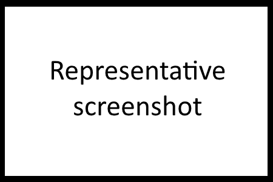
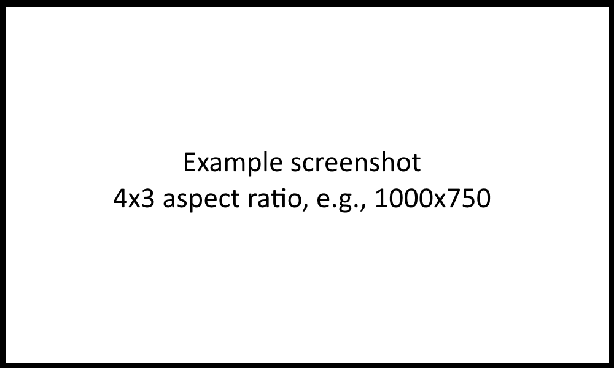

Replace this paragraph (the text between <p> and </p>) with two to six paragraphs describing your app. Tell a compelling story. Assume the reader is not familiar with your app or the market it serves; provide context in your introduction paragraph. Use a few sentences or a full paragraph to explain what Cesium features you are using. Include your company name and/or your name. If the app previously used Google Earth, NASA World Wind, Skyline, or another virtual globe engine, please mention it and your experience migrating to Cesium. Use only simple HTML and inline CSS so we can style and integrate it with our Jekyll-based website. Include links to your app, website, etc., and optionally embed a video if you have one.
Delete this paragraph and add three to five full-resolution screenshots with a 4x3 aspect ratio, e.g., 1000x750 (one can be the same as the representative screenshot above but at full-resolution). Put the image files in the same directory as this html file and link to them below like screenshot1.png (which you can replace).
